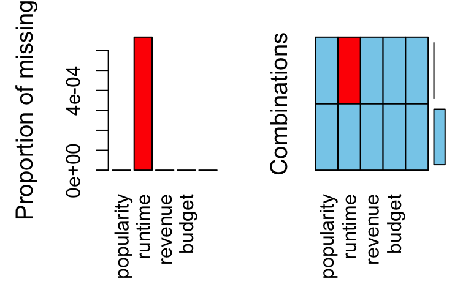
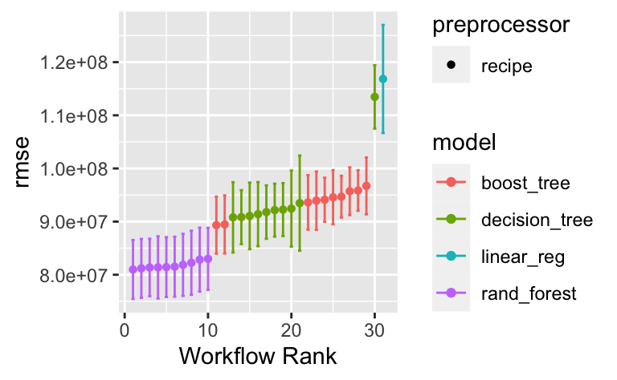

result_obj_file <- "tmdb_model_set.rds"
result_obj_path <- "/Users/sebastiansaueruser/github-repos/rexams-exercises/objects/tmdb_model_set.rds"
#exams::include_supplement(file = result_obj_file,
# recursive = TRUE)
# tmdb_model_set <- readr::read_rds("tmdb_model_set.rds")
#tmdb_model_set <- readr::read_rds(result_obj_path)Aufgabe
Wir bearbeiten hier die Fallstudie TMDB Box Office Prediction - Can you predict a movie’s worldwide box office revenue?, ein Kaggle-Prognosewettbewerb.
Ziel ist es, genaue Vorhersagen zu machen, in diesem Fall für Filme.
Die Daten können Sie von der Kaggle-Projektseite beziehen oder so:
d_train_path <- "https://raw.githubusercontent.com/sebastiansauer/Lehre/main/data/tmdb-box-office-prediction/train.csv"
d_test_path <- "https://raw.githubusercontent.com/sebastiansauer/Lehre/main/data/tmdb-box-office-prediction/test.csv"Aufgabe
Reichen Sie bei Kaggle eine Submission für die Fallstudie ein! Berichten Sie den Score!
Hinweise:
- Sie müssen sich bei Kaggle ein Konto anlegen (kostenlos und anonym möglich); alternativ können Sie sich mit einem Google-Konto anmelden.
- Verwenden Sie mehrere, und zwar folgende Algorithmen: Random Forest, Boosting, lineare Regression. Tipp: Ein Workflow-Set ist hilfreich.
- Logarithmieren Sie
budget. - Betreiben Sie Feature Engineering, zumindest etwas. Insbesondere sollten Sie den Monat und das Jahr aus dem Datum extrahieren und als Features (Prädiktoren) nutzen.
- Verwenden Sie
tidymodels. - Die Zielgröße ist
revenuein Dollars; nicht in “Log-Dollars”. Sie müssen also rücktransformieren, falls Sierevenuelogarithmiert haben.
Lösung
Vorbereitung
library(tidyverse)
library(tidymodels)
library(tictoc) # Rechenzeit messen
#library(Metrics)
library(lubridate) # Datumsangaben
library(VIM) # fehlende Werte
library(visdat) # Datensatz visualisieren
library(lubridate) # Datum/Uhrzeit verarbeiten
library(doParallel) # mehrere CPUs nutzend_train_raw <- read_csv(d_train_path)
d_test <- read_csv(d_test_path)Mal einen Blick werfen:
glimpse(d_train_raw)Rows: 3,000
Columns: 23
$ id <dbl> 1, 2, 3, 4, 5, 6, 7, 8, 9, 10, 11, 12, 13, 14, 1…
$ belongs_to_collection <chr> "[{'id': 313576, 'name': 'Hot Tub Time Machine C…
$ budget <dbl> 1.40e+07, 4.00e+07, 3.30e+06, 1.20e+06, 0.00e+00…
$ genres <chr> "[{'id': 35, 'name': 'Comedy'}]", "[{'id': 35, '…
$ homepage <chr> NA, NA, "http://sonyclassics.com/whiplash/", "ht…
$ imdb_id <chr> "tt2637294", "tt0368933", "tt2582802", "tt182148…
$ original_language <chr> "en", "en", "en", "hi", "ko", "en", "en", "en", …
$ original_title <chr> "Hot Tub Time Machine 2", "The Princess Diaries …
$ overview <chr> "When Lou, who has become the \"father of the In…
$ popularity <dbl> 6.575393, 8.248895, 64.299990, 3.174936, 1.14807…
$ poster_path <chr> "/tQtWuwvMf0hCc2QR2tkolwl7c3c.jpg", "/w9Z7A0GHEh…
$ production_companies <chr> "[{'name': 'Paramount Pictures', 'id': 4}, {'nam…
$ production_countries <chr> "[{'iso_3166_1': 'US', 'name': 'United States of…
$ release_date <chr> "2/20/15", "8/6/04", "10/10/14", "3/9/12", "2/5/…
$ runtime <dbl> 93, 113, 105, 122, 118, 83, 92, 84, 100, 91, 119…
$ spoken_languages <chr> "[{'iso_639_1': 'en', 'name': 'English'}]", "[{'…
$ status <chr> "Released", "Released", "Released", "Released", …
$ tagline <chr> "The Laws of Space and Time are About to be Viol…
$ title <chr> "Hot Tub Time Machine 2", "The Princess Diaries …
$ Keywords <chr> "[{'id': 4379, 'name': 'time travel'}, {'id': 96…
$ cast <chr> "[{'cast_id': 4, 'character': 'Lou', 'credit_id'…
$ crew <chr> "[{'credit_id': '59ac067c92514107af02c8c8', 'dep…
$ revenue <dbl> 12314651, 95149435, 13092000, 16000000, 3923970,…glimpse(d_test)Rows: 4,398
Columns: 22
$ id <dbl> 3001, 3002, 3003, 3004, 3005, 3006, 3007, 3008, …
$ belongs_to_collection <chr> "[{'id': 34055, 'name': 'Pokémon Collection', 'p…
$ budget <dbl> 0.00e+00, 8.80e+04, 0.00e+00, 6.80e+06, 2.00e+06…
$ genres <chr> "[{'id': 12, 'name': 'Adventure'}, {'id': 16, 'n…
$ homepage <chr> "http://www.pokemon.com/us/movies/movie-pokemon-…
$ imdb_id <chr> "tt1226251", "tt0051380", "tt0118556", "tt125595…
$ original_language <chr> "ja", "en", "en", "fr", "en", "en", "de", "en", …
$ original_title <chr> "ディアルガVSパルキアVSダークライ", "Attack of t…
$ overview <chr> "Ash and friends (this time accompanied by newco…
$ popularity <dbl> 3.851534, 3.559789, 8.085194, 8.596012, 3.217680…
$ poster_path <chr> "/tnftmLMemPLduW6MRyZE0ZUD19z.jpg", "/9MgBNBqlH1…
$ production_companies <chr> NA, "[{'name': 'Woolner Brothers Pictures Inc.',…
$ production_countries <chr> "[{'iso_3166_1': 'JP', 'name': 'Japan'}, {'iso_3…
$ release_date <chr> "7/14/07", "5/19/58", "5/23/97", "9/4/10", "2/11…
$ runtime <dbl> 90, 65, 100, 130, 92, 121, 119, 77, 120, 92, 88,…
$ spoken_languages <chr> "[{'iso_639_1': 'en', 'name': 'English'}, {'iso_…
$ status <chr> "Released", "Released", "Released", "Released", …
$ tagline <chr> "Somewhere Between Time & Space... A Legend Is B…
$ title <chr> "Pokémon: The Rise of Darkrai", "Attack of the 5…
$ Keywords <chr> "[{'id': 11451, 'name': 'pok√©mon'}, {'id': 1155…
$ cast <chr> "[{'cast_id': 3, 'character': 'Tonio', 'credit_i…
$ crew <chr> "[{'credit_id': '52fe44e7c3a368484e03d683', 'dep…Train-Set verschlanken
d_train <-
d_train_raw %>%
select(popularity, runtime, revenue, budget, release_date) Datensatz kennenlernen
library(visdat)
vis_dat(d_train)
Fehlende Werte prüfen
Welche Spalten haben viele fehlende Werte?
vis_miss(d_train)
Mit {VIM} kann man einen Datensatz gut auf fehlende Werte hin untersuchen:
aggr(d_train)
Rezept definieren
rec1 <-
recipe(revenue ~ ., data = d_train) %>%
#update_role(all_predictors(), new_role = "id") %>%
#update_role(popularity, runtime, revenue, budget, original_language) %>%
#update_role(revenue, new_role = "outcome") %>%
step_mutate(budget = if_else(budget < 10, 10, budget)) %>%
step_log(budget) %>%
step_mutate(release_date = mdy(release_date)) %>%
step_date(release_date, features = c("year"), keep_original_cols = FALSE) %>%
step_impute_bag(all_predictors()) %>%
step_dummy(all_nominal())
rec1tidy(rec1)# A tibble: 6 × 6
number operation type trained skip id
<int> <chr> <chr> <lgl> <lgl> <chr>
1 1 step mutate FALSE FALSE mutate_8b5rj
2 2 step log FALSE FALSE log_SbJz6
3 3 step mutate FALSE FALSE mutate_1encs
4 4 step date FALSE FALSE date_2N0OE
5 5 step impute_bag FALSE FALSE impute_bag_CO64u
6 6 step dummy FALSE FALSE dummy_GfdgF Check das Rezept
prep(rec1, verbose = TRUE)oper 1 step mutate [training]
oper 2 step log [training]
oper 3 step mutate [training]
oper 4 step date [training]
oper 5 step impute bag [training]
oper 6 step dummy [training]
The retained training set is ~ 0.1 Mb in memory.d_train_baked <-
prep(rec1) %>%
bake(new_data = NULL)
d_train_baked# A tibble: 3,000 × 5
popularity runtime budget revenue release_date_year
<dbl> <dbl> <dbl> <dbl> <int>
1 6.58 93 16.5 12314651 2015
2 8.25 113 17.5 95149435 2004
3 64.3 105 15.0 13092000 2014
4 3.17 122 14.0 16000000 2012
5 1.15 118 2.30 3923970 2009
6 0.743 83 15.9 3261638 1987
7 7.29 92 16.5 85446075 2012
8 1.95 84 2.30 2586511 2004
9 6.90 100 2.30 34327391 1996
10 4.67 91 15.6 18750246 2003
# ℹ 2,990 more rowsd_train_baked %>%
map_df(~ sum(is.na(.)))# A tibble: 1 × 5
popularity runtime budget revenue release_date_year
<int> <int> <int> <int> <int>
1 0 0 0 0 0Keine fehlenden Werte mehr in den Prädiktoren.
Nach fehlenden Werten könnte man z.B. auch so suchen:
datawizard::describe_distribution(d_train_baked)Variable | Mean | SD | IQR | Range | Skewness | Kurtosis | n | n_Missing
----------------------------------------------------------------------------------------------------------------
popularity | 8.46 | 12.10 | 6.88 | [1.00e-06, 294.34] | 14.38 | 280.10 | 3000 | 0
runtime | 107.85 | 22.08 | 24.00 | [0.00, 338.00] | 1.02 | 8.20 | 3000 | 0
budget | 12.51 | 6.44 | 14.88 | [2.30, 19.76] | -0.87 | -1.09 | 3000 | 0
revenue | 6.67e+07 | 1.38e+08 | 6.66e+07 | [1.00, 1.52e+09] | 4.54 | 27.78 | 3000 | 0
release_date_year | 2004.58 | 15.48 | 17.00 | [1969.00, 2068.00] | 1.22 | 3.94 | 3000 | 0So bekommt man gleich noch ein paar Infos über die Verteilung der Variablen. Praktische Sache.
Check Test-Sample
Das Test-Sample backen wir auch mal. Das hat nur den Zwecke, zu prüfen, ob unser Rezept auch richtig funktioniert. Das Preppen und Backen des Test-Samples wir automatisch von predict() bzw. last_fit() erledigt.
Wichtig: Wir preppen den Datensatz mit dem Train-Sample, auch wenn wir das Test-Sample backen wollen.
rec1_prepped <- prep(rec1)
d_test_baked <-
bake(rec1_prepped, new_data = d_test)
d_test_baked %>%
head()# A tibble: 6 × 4
popularity runtime budget release_date_year
<dbl> <dbl> <dbl> <int>
1 3.85 90 2.30 2007
2 3.56 65 11.4 2058
3 8.09 100 2.30 1997
4 8.60 130 15.7 2010
5 3.22 92 14.5 2005
6 8.68 121 2.30 1996Kreuzvalidierung
Nur aus Zeitgründen ist hier \(v=5\) eingestellt; besser wäre z.B. \(v=10\) und \(r=3\).
cv_scheme <- vfold_cv(d_train,
v = 5,
repeats = 1)Modelle
Baum
mod_tree <-
decision_tree(cost_complexity = tune(),
tree_depth = tune(),
mode = "regression")Random Forest
mod_rf <-
rand_forest(mtry = tune(),
min_n = tune(),
trees = 1000,
mode = "regression") XGBoost
mod_boost <- boost_tree(mtry = tune(),
min_n = tune(),
trees = tune()) %>%
set_mode("regression")LM
mod_lm <-
linear_reg()Workflow-Set
preproc <- list(rec1 = rec1)
models <- list(tree1 = mod_tree,
rf1 = mod_rf,
boost1 = mod_boost,
lm1 = mod_lm)
all_workflows <- workflow_set(preproc, models)Fitten und tunen
Fitten/Tunen
Wenn man das Ergebnis-Objekt abgespeichert hat, dann kann man es einfach laden, spart Rechenzeit (der Tag ist kurz):
result_obj_file <- "tmdb_model_set.rds"(Davon ausgehend, dass die Datei im Arbeitsverzeichnis liegt.)
Dann könnte man Folgendes machen:
if (file.exists(result_obj_file)) {
tmdb_model_set <- read_rds(result_obj_file)
} else {
<computer_workflow_set_and_be_happy>
}Achtung Gefährlich! Zwischenspeichern auf der Festplatte birgt die Gefahr, dass man vergisst, das Objekt auf der Festplatte zu aktualisieren und Sie noch in einem Jahr und nach 100 Updates Ihres Rezepts immer noch das uralte Objekt von der Festplatte laden …
Um Rechenzeit zu sparen, kann man das Ergebnisobjekt abspeichern, dann muss man beim nächsten Mal nicht wieder von Neuem berechnen:
#write_rds(tmdb_model_set, "objects/tmdb_model_set.rds")Hier berechnen wir aber lieber das Modell neu:
tic()
tmdb_model_set <-
all_workflows %>%
workflow_map(
resamples = cv_scheme,
#grid = 10,
metrics = metric_set(rmse),
seed = 42, # reproducibility
control = control_grid(verbose = FALSE))
toc()172.136 sec elapsedOhne Parallelisierung dauerte die Berechnung bei mir knapp 4 Minuten (225 Sec). Ich habe hier auf Parallelisierung verzichtet, da Tidymodels einen Fehler aufwarf mit der Begründung, dass das Paket lubridate in den parallel laufenden Instanzen nicht verfügbar sei (und der parameter pckgs = 'lubridate keine Linderung brachte).
Check:
tmdb_model_set[["result"]][[1]]# Tuning results
# 5-fold cross-validation
# A tibble: 5 × 4
splits id .metrics .notes
<list> <chr> <list> <list>
1 <split [2400/600]> Fold1 <tibble [10 × 6]> <tibble [0 × 3]>
2 <split [2400/600]> Fold2 <tibble [10 × 6]> <tibble [0 × 3]>
3 <split [2400/600]> Fold3 <tibble [10 × 6]> <tibble [0 × 3]>
4 <split [2400/600]> Fold4 <tibble [10 × 6]> <tibble [0 × 3]>
5 <split [2400/600]> Fold5 <tibble [10 × 6]> <tibble [0 × 3]>Finalisieren
Welcher Algorithmus schneidet am besten ab?
Genauer gesagt, welches Modell, denn es ist ja nicht nur ein Algorithmus, sondern ein Algorithmus plus ein Rezept plus die Parameterinstatiierung plus ein spezifischer Datensatz.
tune::autoplot(tmdb_model_set)
R-Quadrat ist nicht so entscheidend; rmse ist wichtiger.
Die Ergebnislage ist nicht ganz klar, aber einiges spricht für das Random-Forest-Modell.
tmdb_model_set %>%
collect_metrics() %>%
arrange(mean) %>%
slice_head(n = 10)# A tibble: 10 × 9
wflow_id .config preproc model .metric .estimator mean n std_err
<chr> <chr> <chr> <chr> <chr> <chr> <dbl> <int> <dbl>
1 rec1_rf1 Preprocessor1… recipe rand… rmse standard 8.09e7 5 2.62e6
2 rec1_rf1 Preprocessor1… recipe rand… rmse standard 8.11e7 5 3.31e6
3 rec1_rf1 Preprocessor1… recipe rand… rmse standard 8.12e7 5 2.85e6
4 rec1_rf1 Preprocessor1… recipe rand… rmse standard 8.15e7 5 2.19e6
5 rec1_rf1 Preprocessor1… recipe rand… rmse standard 8.15e7 5 2.19e6
6 rec1_rf1 Preprocessor1… recipe rand… rmse standard 8.16e7 5 2.29e6
7 rec1_rf1 Preprocessor1… recipe rand… rmse standard 8.16e7 5 3.05e6
8 rec1_rf1 Preprocessor1… recipe rand… rmse standard 8.16e7 5 2.63e6
9 rec1_rf1 Preprocessor1… recipe rand… rmse standard 8.16e7 5 2.15e6
10 rec1_rf1 Preprocessor1… recipe rand… rmse standard 8.25e7 5 2.30e6best_model_params <-
extract_workflow_set_result(tmdb_model_set, "rec1_rf1") %>%
select_best()
best_model_params# A tibble: 1 × 3
mtry min_n .config
<int> <int> <chr>
1 2 19 Preprocessor1_Model03Finalisieren
best_wf <-
all_workflows %>%
extract_workflow("rec1_rf1")
best_wf══ Workflow ════════════════════════════════════════════════════════════════════
Preprocessor: Recipe
Model: rand_forest()
── Preprocessor ────────────────────────────────────────────────────────────────
6 Recipe Steps
• step_mutate()
• step_log()
• step_mutate()
• step_date()
• step_impute_bag()
• step_dummy()
── Model ───────────────────────────────────────────────────────────────────────
Random Forest Model Specification (regression)
Main Arguments:
mtry = tune()
trees = 1000
min_n = tune()
Computational engine: ranger best_wf_finalized <-
best_wf %>%
finalize_workflow(best_model_params)
best_wf_finalized══ Workflow ════════════════════════════════════════════════════════════════════
Preprocessor: Recipe
Model: rand_forest()
── Preprocessor ────────────────────────────────────────────────────────────────
6 Recipe Steps
• step_mutate()
• step_log()
• step_mutate()
• step_date()
• step_impute_bag()
• step_dummy()
── Model ───────────────────────────────────────────────────────────────────────
Random Forest Model Specification (regression)
Main Arguments:
mtry = 2
trees = 1000
min_n = 19
Computational engine: ranger Final Fit
fit_final <-
best_wf_finalized %>%
fit(d_train)
fit_final══ Workflow [trained] ══════════════════════════════════════════════════════════
Preprocessor: Recipe
Model: rand_forest()
── Preprocessor ────────────────────────────────────────────────────────────────
6 Recipe Steps
• step_mutate()
• step_log()
• step_mutate()
• step_date()
• step_impute_bag()
• step_dummy()
── Model ───────────────────────────────────────────────────────────────────────
Ranger result
Call:
ranger::ranger(x = maybe_data_frame(x), y = y, mtry = min_cols(~2L, x), num.trees = ~1000, min.node.size = min_rows(~19L, x), num.threads = 1, verbose = FALSE, seed = sample.int(10^5, 1))
Type: Regression
Number of trees: 1000
Sample size: 3000
Number of independent variables: 4
Mtry: 2
Target node size: 19
Variable importance mode: none
Splitrule: variance
OOB prediction error (MSE): 6.574147e+15
R squared (OOB): 0.65244 d_test$revenue <- NA
final_preds <-
fit_final %>%
predict(new_data = d_test) %>%
bind_cols(d_test)Submission
submission_df <-
final_preds %>%
select(id, revenue = .pred)Abspeichern und einreichen:
#write_csv(submission_df, file = "submission.csv")Kaggle Score
Diese Submission erzielte einen Score von 4.79227 (RMSLE).
sol <- 4.79227Categories:
- ds1
- tidymodels
- stat-learning
- tmdb
- random-forest
- num